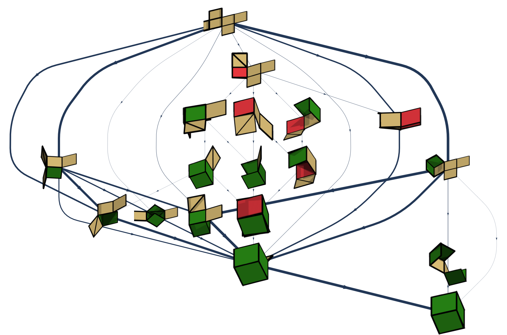

Santa Fe Institute, September 17–19, 2015
Organizers: Yoav Kallus, Pablo Damasceno, and Sidney Redner
 Proteins, self-assembled materials, virus capsids, and self-replicating biomolecules go through a variety of states on the way to or in the process of serving their function. The network of possible states and possible transitions between states plays a central role in determining whether they do so reliably. The goal of this workshop is to bring together researchers who study the kinetic networks of a variety of self-assembling, self-replicating, and programmable systems to exchange ideas about, methods for, and insights into the construction of kinetic networks from first principles or simulation data, the analysis of behavior resulting from kinetic network structure, and the algorithmic or heuristic design of kinetic networks with desirable properties.